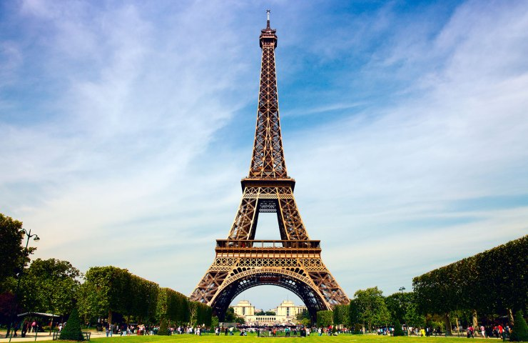

Torre Eiffel

A Torre Eiffel (em francês: Tour Eiffel, /tuʀ ɛfɛl/) é uma torre treliça de ferro do século XIX localizada no Champ de Mars, em Paris, a qual se tornou um ícone mundial da França. A torre, que é o edifício mais alto da cidade,[1] é o monumento pago mais visitado do mundo, com milhões de pessoas frequentando-o anualmente. Nomeada em homenagem ao seu projetista, o engenheiro Gustave Eiffel, foi construída como o arco de entrada da Exposição Universal de 1889.
Possui 324 metros de altura e fica cerca de 15 centímetros mais alta no verão, devido à dilatação térmica do ferro.[2] Foi a estrutura mais alta do mundo desde a sua conclusão até 1930, quando perdeu o posto para o Chrysler Building, em Nova Iorque, Estados Unidos. Não incluindo as antenas de transmissão, é a segunda estrutura mais alta do país, atrás apenas do Viaduto de Millau, concluído em 2004. A torre tem três níveis para os visitantes. Os ingressos podem ser adquiridos nas escadas ou elevadores do primeiro e do segundo nível. A caminhada para o primeiro nível é superior a 300 degraus. O terceiro e mais alto nível só é acessível por elevador. Do primeiro andar vê-se a cidade inteira, tendo o andar sanitários e várias lojas, e o segundo nível tem um restaurante.
A torre tornou-se o símbolo mais proeminente de Paris e da França, sendo parte de cenários de filmes que se passam na cidade. Seu estatuto de ícone é tão determinado que ainda serve como um símbolo para todo o país, como quando a torre foi usada como o logotipo da candidatura francesa para sediar os Jogos Olímpicos de Verão de 1992.